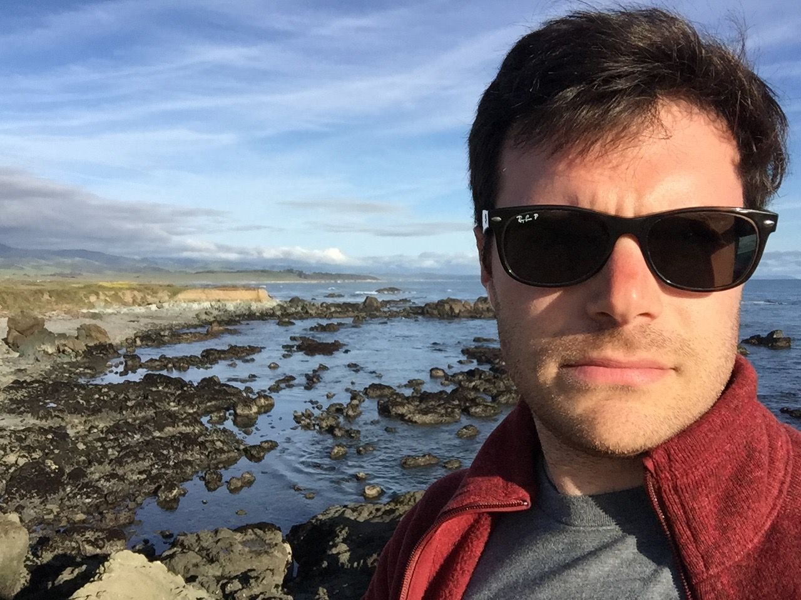
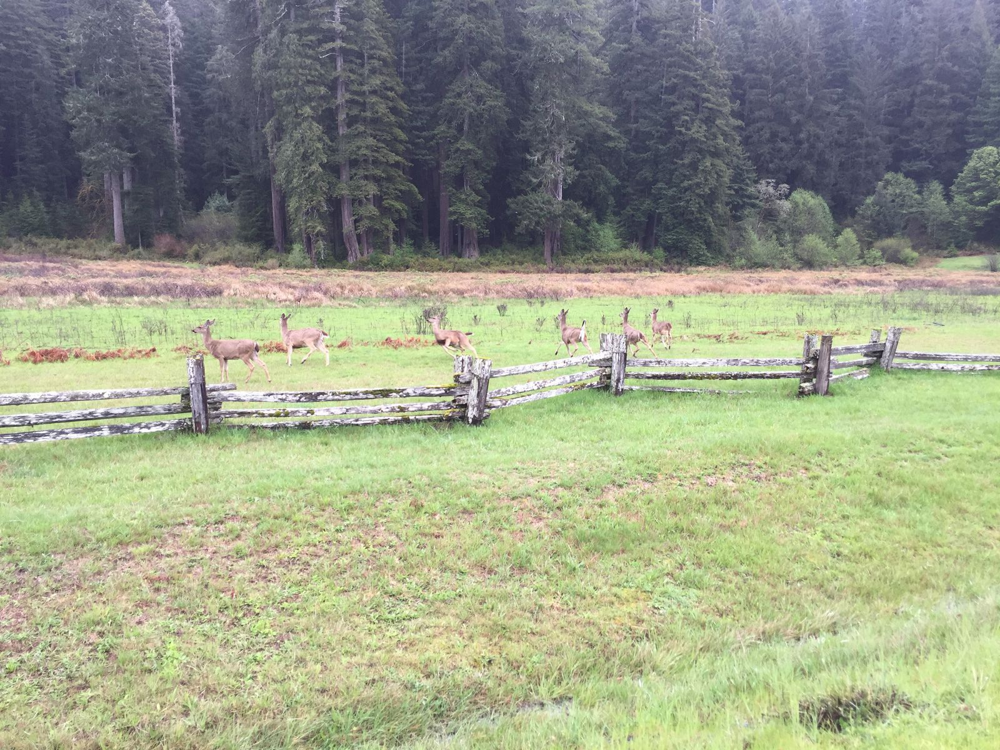
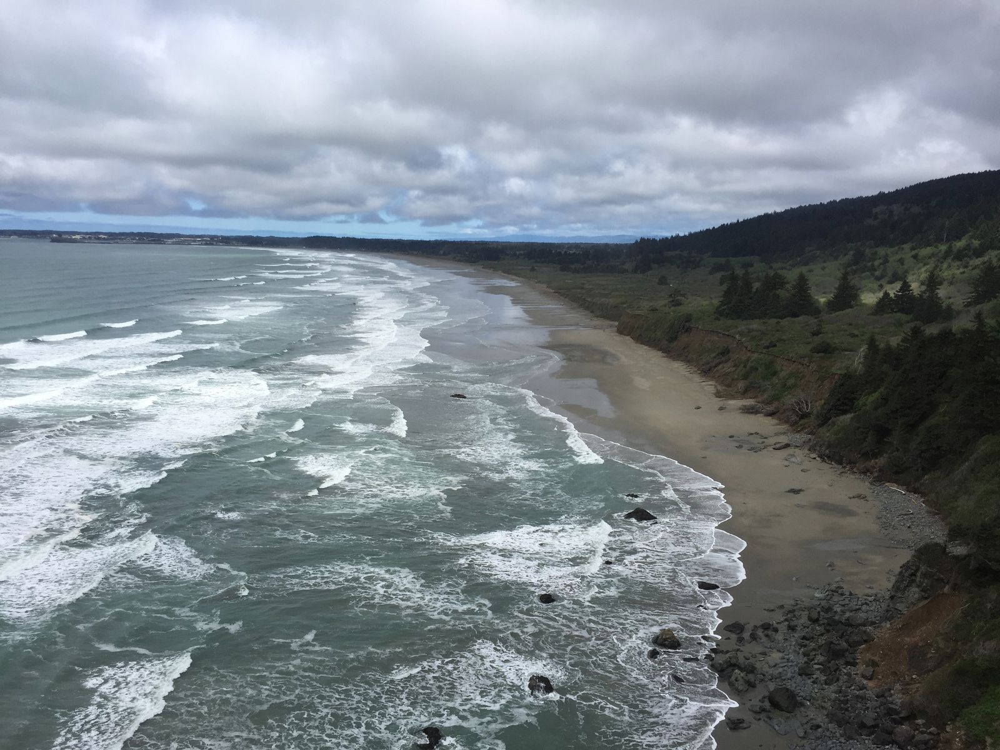
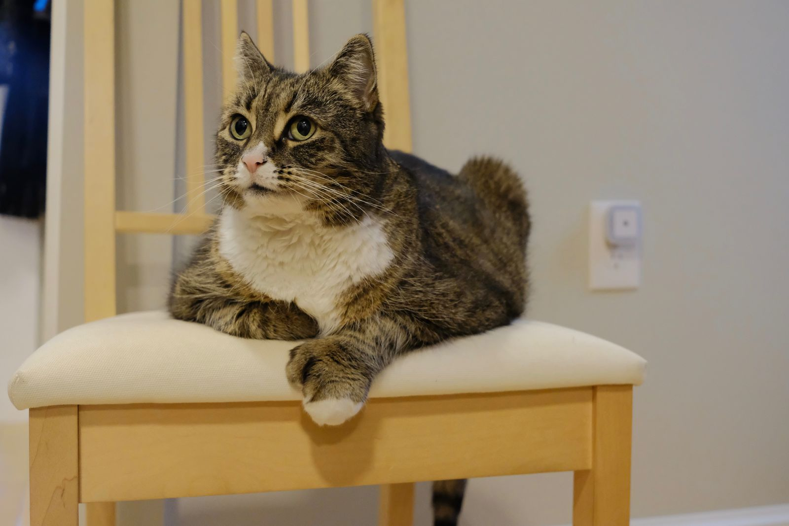
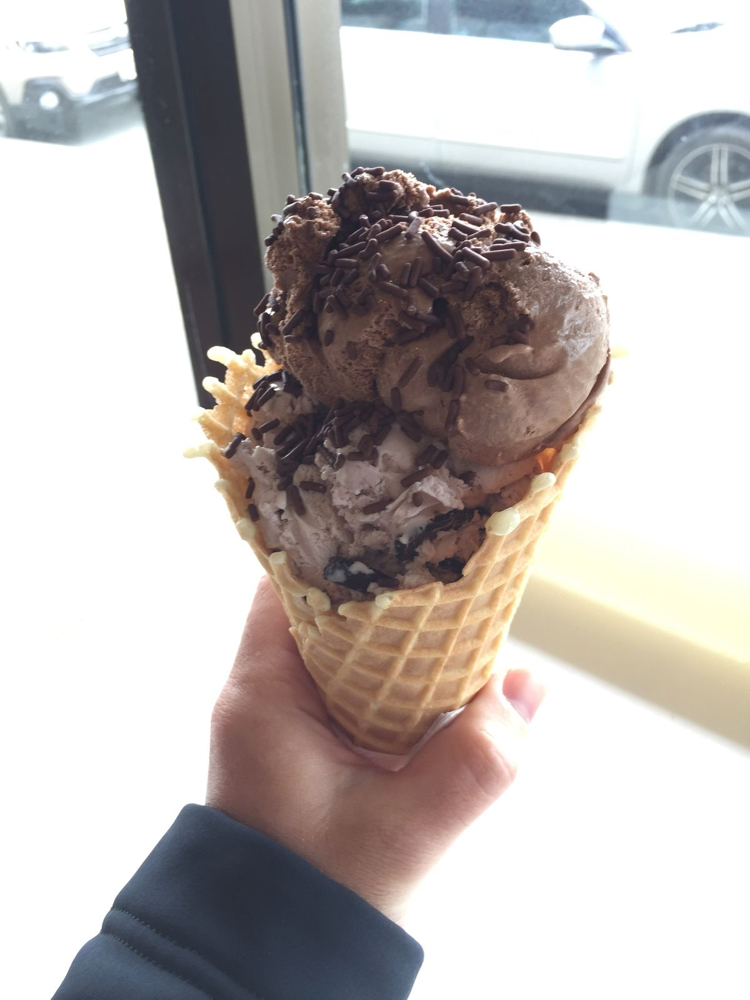
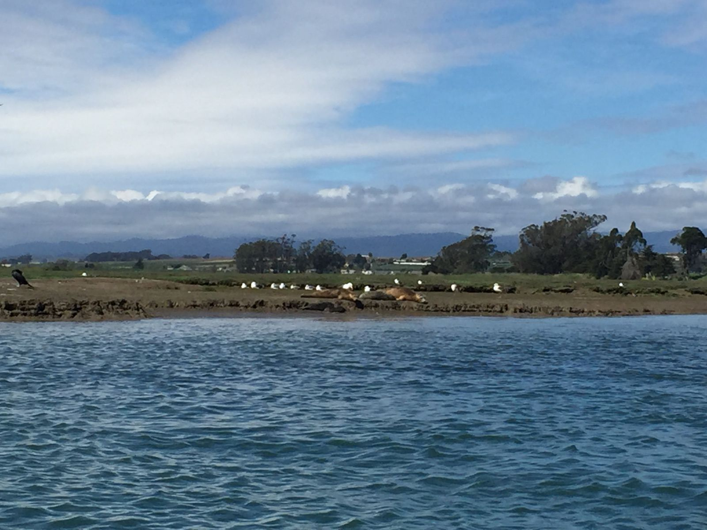

Ten Days Left
With just ten days left in the trip, I finally left California this afternoon and headed into Oregon. The past few days have been unlike most of the rest of my trip. I've been on my own, I've been doing a lot of driving, and I've been staying in basic hotels instead of with friends or family. Tonight is a bit of an exception, as I am staying at my uncle's brother's house in Grants Pass. Just a few minutes ago I noticed that my hotel booking for tomorrow night is actually for sometime next month. Now I am on hold with the booking agency to fix the reservation.

After tomorrow, though, my trip returns to less driving and more seeing friends. I will be spending several days in Portland and then Seattle before flying home a week from Monday. I don't have any grand revelations to look back on, but I can say that so far the trip has been good.

I've learned that I am always looking to the next thing. I usually can't just sit still and I pack my days as full as I can. I suppose it's some form of FOMO, that I don't want to miss anything in the precious little time I have in each place. But I've also learned the opposite side, where packing in too much means that I don't enjoy what I'm doing. Over the weeks, I think I have found the right balance. I need daily time to recharge, even though this whole trip is intended to be a time to recharge. I've also learned that Bluetooth speakers are really great at playing soft music before I go to sleep.

I'm writing this all as if my trip is over but I still have roughly a quarter of it left. Some people have told me that I am never going to want to return to Boston or go back to work. I don't think that's true. If I needed to go back to work tomorrow, I could, with little regret. As it so happens, I don't need to go back to work tomorrow, and I will continue to enjoy this time off until I do. But as much as I like this travel—seeing new places and reconnecting with old friends—I do like having some sort of routine. Being away for so long helps put that all into context.

I miss my cat, and I look forward to seeing here again when I get back to Boston. (I do know that she is in very good hands, though, with my friends, who have built her an excellent box fort). I forget what it feels like to drive my car rather than the rental Ford Fusion. I kind of forget my room and my desk and my shower and the feel of my bed. I remember the walk to work, but actually doing work feels so distant in the past now.

I think my not working was what originally drove me to pack my days full of too many things. I always like to have a goal, something to be working towards. When I stopped working, I channeled that energy into planning my trip (which I did very little of beforehand). It took a good 3+ weeks before I realized that I was overdoing it. I'm in a good state now and I can keep that up for a while longer, but eventually I'll want something to focus my efforts on. So I'll be glad to return to Boston for that reason.

I'm not yet sure what I'll be doing when I return to work, but I'm sure it will be something good. Until then, I will continue eating ice cream everyday, reconnecting with friends, spending time reflecting, and enjoying the great outdoors. Come to think of it, there's no reason I can't do all those things back in Boston, too.
Oh, the booking agency called back. I'm all good for tomorrow.